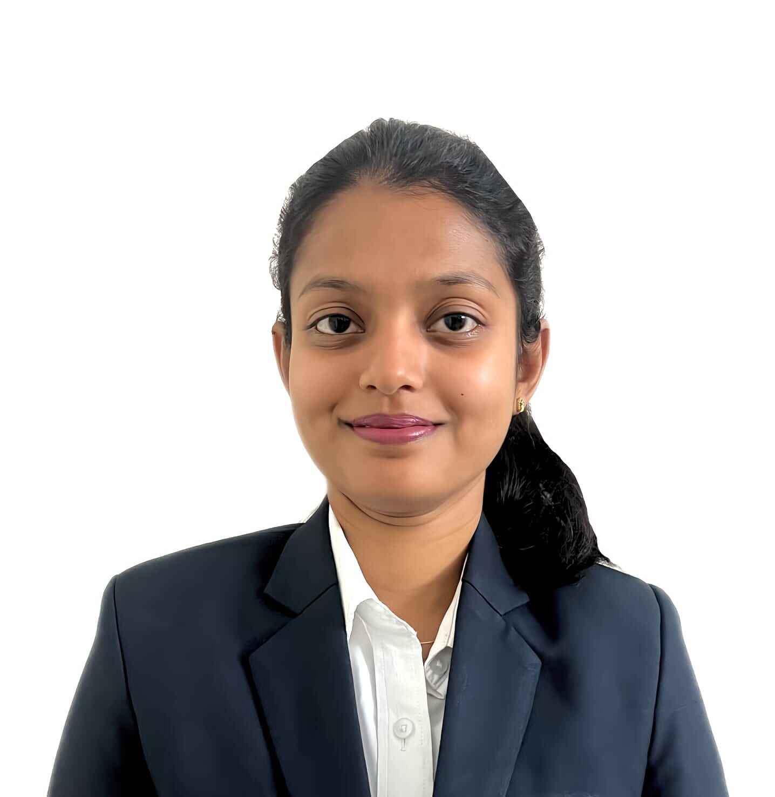

Sreeranjani K
Electronics and Communication Student
Bangalore India ph no:+91 8105663310

I am seeking a position in an organization with a challenging environment where I can contribute my skills to the
organization’s success and synchronize with new technology while being resourceful, innovative, and flexible.
PROJECT
IoT pet feeder using ARDUINO
- Designed and implemented an IOT pet feeder in a 4-person team using Embedded C and Arduino
- It is used to feed the pet automatically. It consists of a Wi-Fi module. The user should make sure the device
is connected to Wi-Fi so that the user can dispense the food into the pet feeder bowl with the help of his
phone when he cannot feed the pet manually.
Retinal Image Segmentation and Disease Classification Using Deep Learning
- This project is implemented using various deep-learning techniques in a team of 4 using Python language.
- The main aim is to segment the retinal vessels and identify a few of the retinal eye diseases like Glaucoma,
diabetic retinopathy, cataract, and normal eye. Further, a user-friendly GUI is also developed for disease
classification, which predicts the disease with its class probability.
- The deep learning model used for retinal image segmentation is res-u-net. And the model used for
classification is RESNET50, VGG16, and EFFICIENTNET-B3.
EDUCATION
Dayananda Sagar Academy of Technology and Management, Bengaluru, Karnataka
Bachelor of Engineering — Electronics and Communication Engineering
2019-2023
CGPA: 8.53
Deeksha Centre for Learning, Bengaluru, Karnataka
Xll/ PUC
03/2019
Percentage: 87.7%
Warriors’ English School, Challakere, Karnataka
10th
03/2017
Percentage: 93.92%
COURSES/CERTIFICATES
- AWS Academy Graduate - AWS Academy Cloud Foundations
(04/2022)
- 1Stop (VYORIUS) – Certification of Completion of Industrial Program on Robotics
br> (09/2021)
TECHNICAL SKILLS
- MATLAB
- Python
- C/C++
- Embedded C
- Verilog HDL
- VLSI Design
- Embedded Systems
SOFT SKILLS
- Communication skills
- Problem Solving
- Time Management
- Presentation Skills
- Team Work
ACHIEVEMENTS
- Published a research paper in IJRASET (International Journal for Research in applied science &
engineering technology) entitled “Retinal image segmentation and disease classification using deep
learning” in April 2023.
- Published a survey paper in MAT JOURNALS entitled “Deep learning Res-U-Net Model for retinal vascular
segmentation” in the year 2022
- Awarded first prize in an intra-college Electronics quiz competition (ELECTRO BLAST).
- Secured first place in Project Expo Event of IETE Foundation Day-2021.
- District-level volleyball player.
- Given Seminars to enhance creativity among students.
OTHER
Languages:
- English(Professional Working Proficiency)
- Kannada (Native or Bilingual Proficiency)
and - Telugu.
Hobbies
- Painting, Reading Novels, Dancing, Volunteering, Outdoor Games